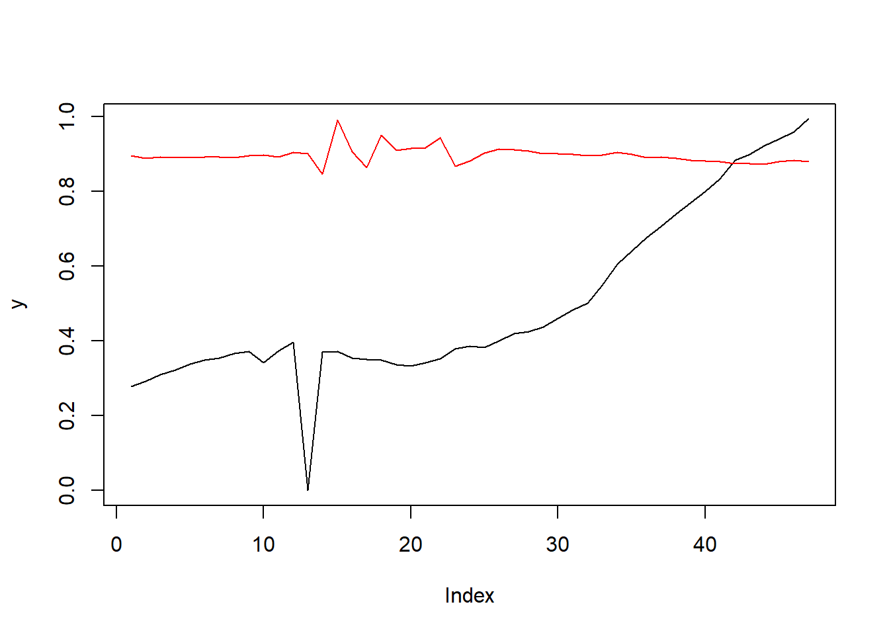
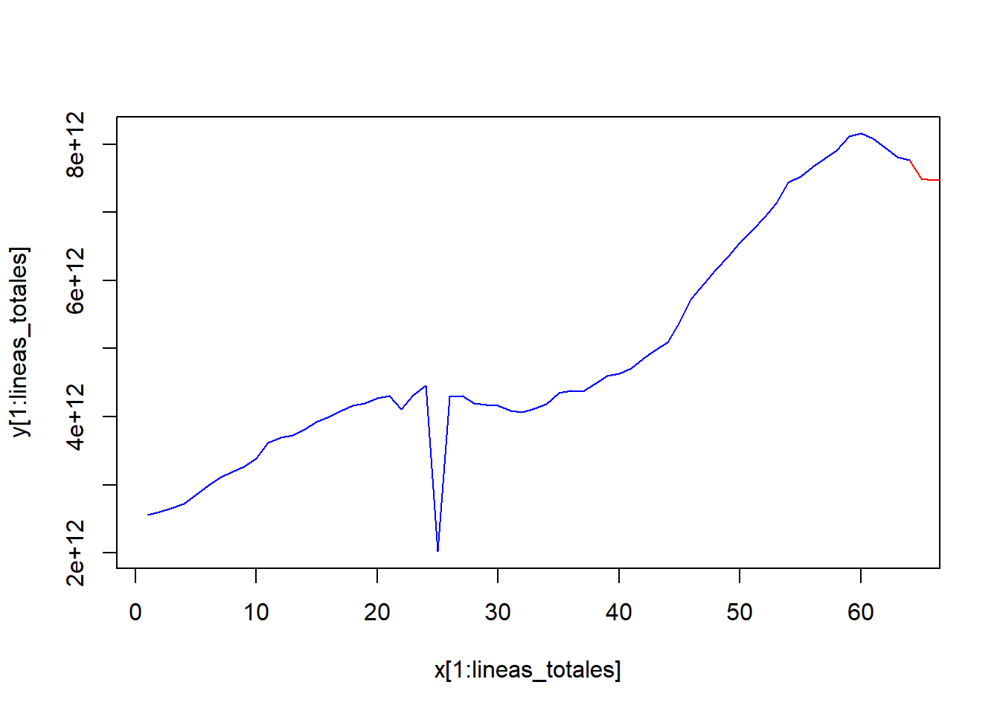

Capitulo 9 Jordan
Ploteamos el error iterativo de 7 neuronas:
plotIterativeError(fit, main = "Iterative Error for 7 Neuron")
Veamos ahora el error
y <- as.vector(outputs[-t_test])
plot(y,type="l")
pred <- predict(fit, inputs[-t_test])
lines(pred,col = "red")

Procedemos con la prediccion
predictions <- predict(fit,inputs[-t_train])
mod_jordan <- predictions*(max(Z)-min(Z))+min(Z)
mod_jordan## [,1]
## Jan 2019 7.496510e+12
## Feb 2019 7.466085e+12
## Mar 2019 7.485655e+12
## Apr 2019 7.484994e+12
## May 2019 7.482381e+12
## Jun 2019 7.492138e+12
## Jul 2019 7.487598e+12
## Aug 2019 7.476202e+12
## Sep 2019 7.511885e+12
## Oct 2019 7.521976e+12
## Nov 2019 7.491398e+12
## Dec 2019 7.565753e+12
## Jan 2020 7.545399e+12
## Feb 2020 7.212222e+12
## Mar 2020 8.100570e+12
## Apr 2020 7.577544e+12
## May 2020 7.313275e+12
## Jun 2020 7.852690e+12
## Jul 2020 7.598834e+12
## Aug 2020 7.626874e+12
## Sep 2020 7.644746e+12
## Oct 2020 7.805679e+12
## Nov 2020 7.340772e+12
## Dec 2020 7.427901e+12
## Jan 2021 7.561133e+12
## Feb 2021 7.616939e+12
## Mar 2021 7.613438e+12
## Apr 2021 7.586914e+12
## May 2021 7.548052e+12
## Jun 2021 7.545705e+12
## Jul 2021 7.539354e+12
## Aug 2021 7.516734e+12
## Sep 2021 7.527965e+12
## Oct 2021 7.563203e+12
## Nov 2021 7.529698e+12
## Dec 2021 7.477176e+12
## Jan 2022 7.490395e+12
## Feb 2022 7.473057e+12
## Mar 2022 7.439036e+12
## Apr 2022 7.421486e+12
## May 2022 7.410294e+12
## Jun 2022 7.385566e+12
## Jul 2022 7.381260e+12
## Aug 2022 7.371684e+12
## Sep 2022 7.414113e+12
## Oct 2022 7.432210e+12
## Nov 2022 7.416511e+12
## Jan 2023 7.429574e+12
## Feb 2023 7.427371e+12
## Mar 2023 7.454445e+12
## Apr 2023 7.493430e+12Ahora veamoslo en la grafica
x <- 1:(lineas_totales+length(mod_jordan))
y <- c(as.vector(Z),mod_jordan)
plot(x[1:lineas_totales], y[1:lineas_totales],col = "blue", type="l")
lines( x[(lineas_totales):length(x)], y[(lineas_totales):length(x)], col="red")